開催報告
またまた、たいへん遅くなってしまいましたが、第2回ハッカソンの開催報告を公開します。
第2回ハッカソンは、予定通り2018年7月15日（日）～7月20日（金）の足かけ6日間にわたって、徳島市の徳島大学 先端酵素学研究所（初日シンポジウム）とかんぽの宿 徳島（ハッカソン本体）で開催されました。
このハッカソンは（通常どおりの）日本バイオインフォマティクス学会(JSBi)に加えて、公益財団法人・加藤記念バイオサイエンス振興財団から助成金を頂いて実行することができました。
また、前回に引き続き今回も、情報・システム研究機構(ROIS)・データサイエンス共同利用基盤施設・ライフサイエンス統合データベースセンター(DBCLS)が実施する、「国内版バイオハッカソン（以下「BH」）BH18.7」と一体的に行いました。
ハッカソンの告知
今回のハッカソン開催にあたっては、バイオハッカソン側が自前のメーリングリストに、我々も同じくメーリングリストに告知を流した他、ワークショップのときと同様、以下の学会･団体のweb・SNS・メーリングリストなどに告知を掲載していただきました：
- 日本バイオインフォマティクス学会(JSBi)
- 日本質量分析学会(MSSJ)
- 日本プロテオーム学会(JPrOS/JHUPO)
- 情報処理学会(SIG-BIO)
- 日本分子生物学会
- 日本生化学会
- 日本生物物理学会
- 糖鎖インフォマティクス若手の会
- サイエンスポータル
- 文部科学省・ライフサイエンスの広場
- バイオインダストリー協会
- Mass++ユーザー会
参加者について
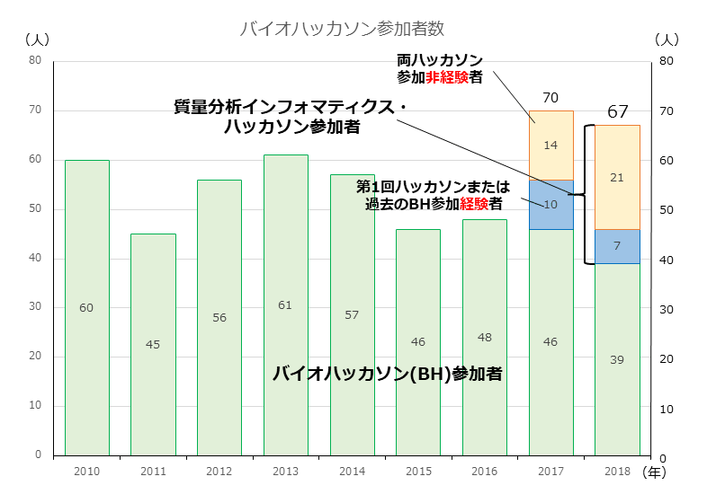図中で、過去に一度でもDBCLSバイオハッカソンまたは第1回の質量分析インフォマティクス・ハッカソンに参加した経験のある人は、「参加経験者」に分類した。従って「参加非経験者」は「全くの新規参加者」。なお「バイオハッカソン(BH)側の参加者で、初参加の人」は、この「参加非経験者」の中にはカウントしていない。 或る参加者は過去にBHに参加していたが、2017年には質量分析側として参加し、今年は本務の関係でBHとして参加しているが、この場合2017年は青色の、今年は緑色のグループの一員としてカウントしている。
参加者数ですが、BH側の参加者が減少したために合計人数は若干減少していますが、質量分析インフォマティクス・ハッカソンとしては更に参加者が増加し、両ハッカソン合計67人中28人、実に4割強が本ハッカソンとしての参加者、ということになりました（なお参加日は人によって異なりますので、単純に「1日でも参加した人」を全て一人として、どちらかのハッカソンの参加者としてカウントしています）。
初日シンポジウム
昨年度は“ミーティング”として行った講演会を、今回は（もっと時間をかけて企画して）“（ミニ・）シンポジウム”として実施しました。会場は徳島大学先端酵素学研究所（蔵本キャンパス）の藤井節郎記念医科学センター。建物の外観は「ハッカソン会場への交通」ページの「初日シンポジウム会場」項からリンクしたGoogle Mapに埋め込んで ありますが、圧倒されるような威容です。
玄関扉、そしてすぐ内側には､シンポジウムのポスターが掲示されていました。
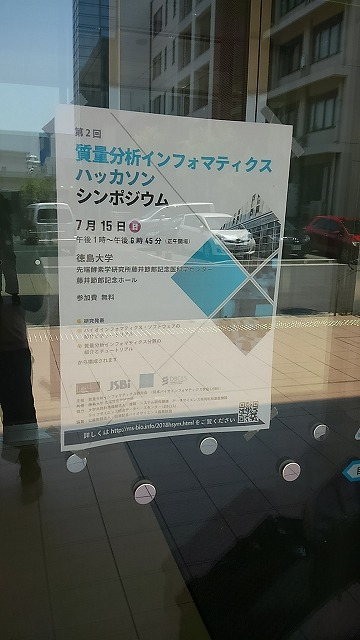 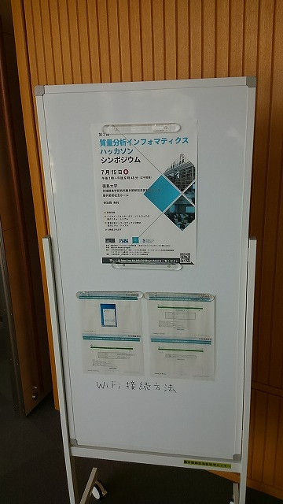徳島への交通路は主に航空路（明石海峡大橋が鉄道を通せる仕様になっていないため、瀬戸大橋（児島～坂出ルート）経由だと四国北部の非電化区間を延々と移動する必要があるため、現実的ではないのです）､関西在住者のみ高速バス、というのが普通です。 幸い航空路は大きな遅延もなく、大多数の関係者は無事に到着したのですが、高速バスは殆ど1時間遅延し、開場時刻を過ぎて開始寸前に辛うじて会場に滑り込むスタッフも…（ってすみません、アタクシです）。
シンポジウムには最終的に、（講演者を含めて）42人が参加されました。これは（たまたま）前回と同じ人数なのですが、今回はフライト遅延などもなかったお蔭で、事前登録者は全員（直前に病欠したお一人以外）登録どおり参加されています。
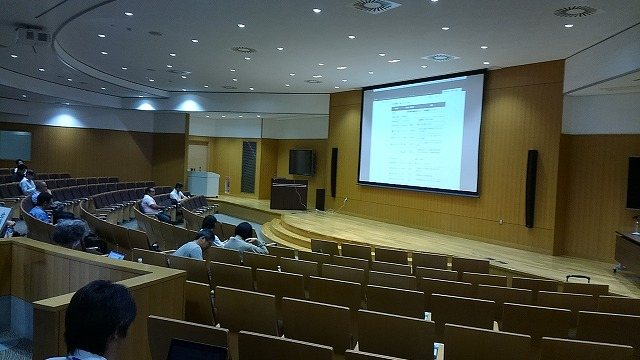この種の会合を、東京でなく徳島で行ったということを考えると、42人という人数は充分多数なのですが、会場の藤井ホールは非常に立派な設備かつ大人数収容であるため、ご覧のように微妙に「人口密度の低い」（「閑散とした」ともいう）状態になっていました（汗
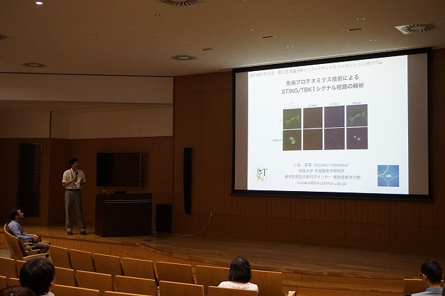 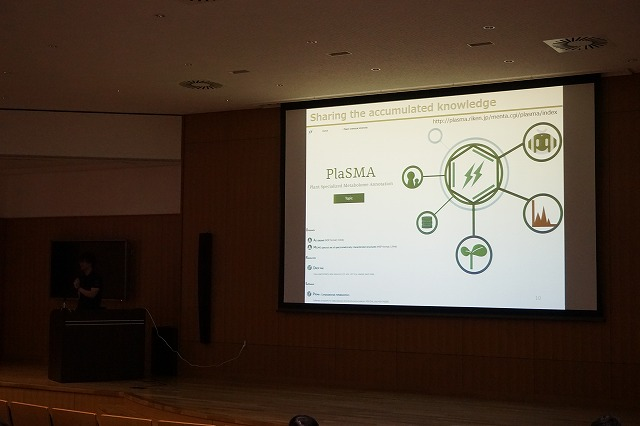
なお当日の講演は撮影し、（DBCLSがYouTubeを使って公開している）「TogoTV（統合TV）」のコンテンツとして公開しています（前回、音声トラブルで公開できなかった“敵討ち”ができました。内容はほぼ同様の範囲をカバーしており、より詳細になっています）。
今回は（前回と異なって）講演会の後の「討論」時間は特に設けず、翌日の（バイオハッカソンと共同の）「課題出し」時間に任せることにしましたが、特に問題もなくスムーズにハッカソン本体も進行していたようです。
なおこのシンポジウム実施のために、前回に引き続き、情報・システム研究機構(ROIS)・データサイエンス共同利用基盤施設（DS施設）の公募型共同研究予算「ROIS-DS-JOINT 共同研究集会」に応募し、採択されたため、初日の会合のためにはこの予算も使用しています（ROIS-DS-JOINT(002RM2018)）。
さてシンポジウムの後は、シンポジウム非参加者（バイオハッカソン側の一部）も含めたレセプションです。会場は徳島駅近くの阿波観光ホテルです。
ハッカソン本体を行う場所ではないのですが、交通の便がいいこと、懇親会用のパーティプランがあること、パーティ参加者は格安でその晩宿泊できる､という（多くの人が利用した）プランがあることから､ここを選んでいます（徳島では有名どころのホテルです。実際、料理は美味かったし部屋もそこそこ広かった）。
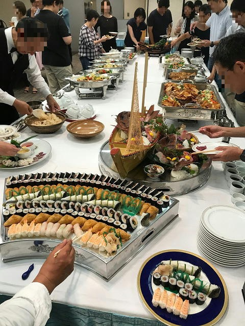レセプション費用は参加者の実費負担でしたが、徳島県観光協会・徳島市観光協会からDBCLSが取得した「コンベンション開催助成金」（用途無制限）も利用しています。レセプションの一部の料理や、レセプションとその後の夜に登場した地酒類（の一部）は、この予算によるものです（お蔭で料理の割にはレセプション費が安くあげられたわけです。全額を地元で消費できました）。
ハッカソン本体
7月16日午前8時30分、チャーターしたバスで（多くの参加者が）阿波観光ホテルを出発、眉山山頂のかんぽの宿に向かいます。

今回の部屋は【和室】です！
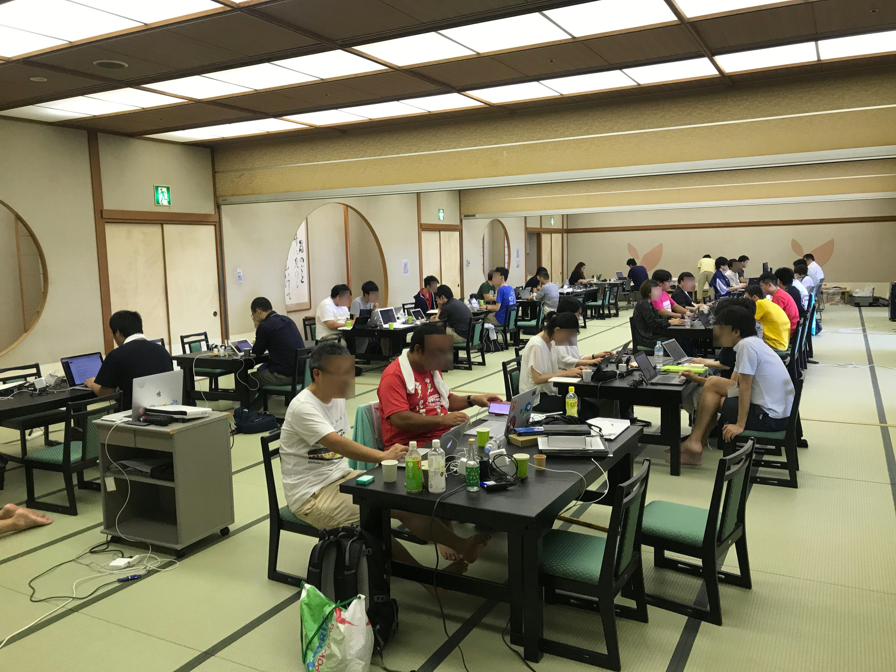もちろんデスクと椅子があるので、通常と何も変わりません。…い、いや、そうでもないか？こんなに真面目に作業をしているように見えて､実は（写真左端に足が…）
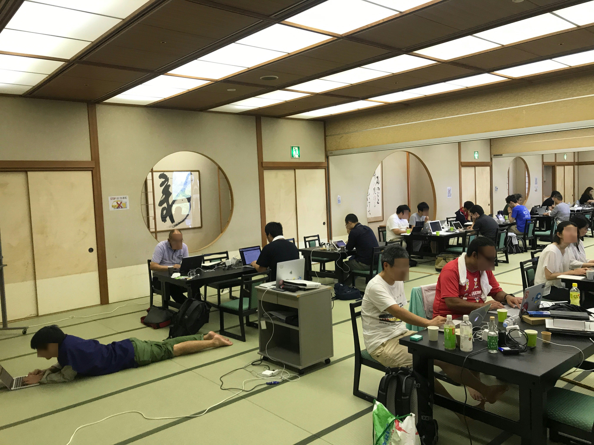はい、寝そべって仕事してる人もいるし（これができるのは畳のメリットだよなあ）、カメラをパンして後ろを見ると
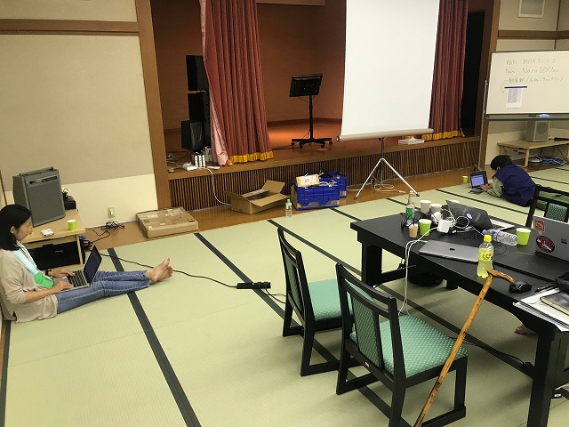…うん、もうまったりフリーダムっすね。
ちなみに（何にどうちなむ？）、手前右の方に見えてる杖はワタクシの杖です。ハッカソンの3日前に突如、ギックリ腰をやったもんで＿|￣|○
会議になると、これが更に【和室・行儀悪いバージョン】になります。これ、私自身も参加する会議なんですが、ギックリ腰やった後でこんな体勢で会議ができるかっつーの。
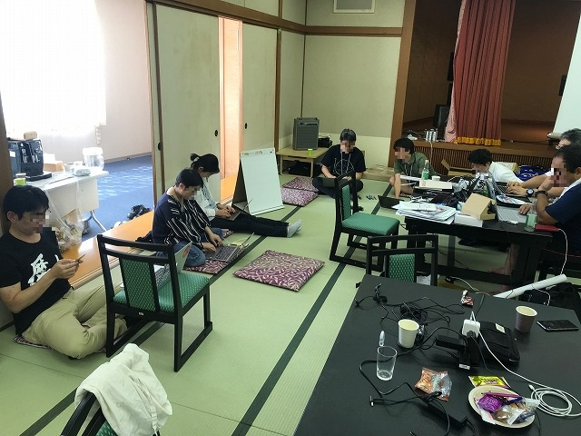てことで、ワタクシはこの中に、椅子に座って混ざったわけで、まぁそういう新天地な雰囲気で仕事が進んでいきます。
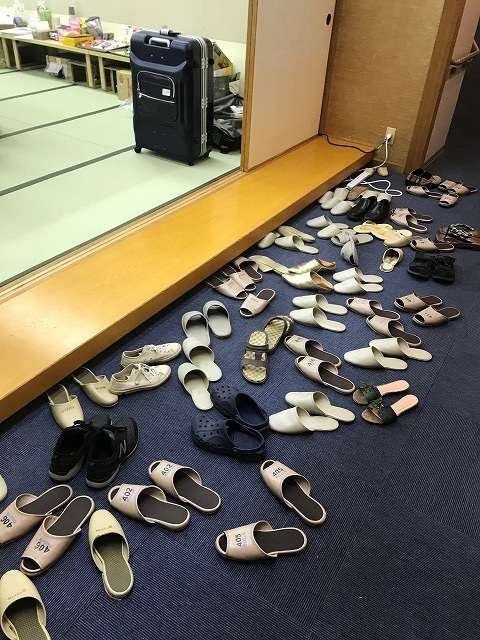
もうスリッパの数も大変。
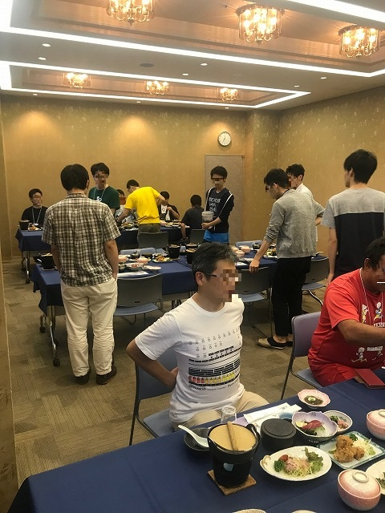
こちら夕食時の風景ですが、（初日は結構凝った食事が出たんですが）さすがに毎日ではなく（毎日だと食う方も疲れそう）、2日目からは“普通の献立”が並んでいます。でもご覧のように、携帯燃料を使ったミニコンロがあったりして、普通は普通でも、ちょいと雰囲気の違う食事になっておりました。
実は、元々宿から提示された案では、この（映っている）部屋がハッカソン会場で、実際に会場になったあの畳敷きの大広間が夕食会場だったんですね。でも、「ハッカソン自体は広い空間でのびのびやりたいし、そもそもここに全員が同時に入れるのか？」ということで、ホテルにお願いして部屋を入れ替えてもらいました。
かんぽの宿さん、色々わがままを聞いていただいて有り難うございました。でもお蔭で、とても快適にハッカソンが進められたと思います。
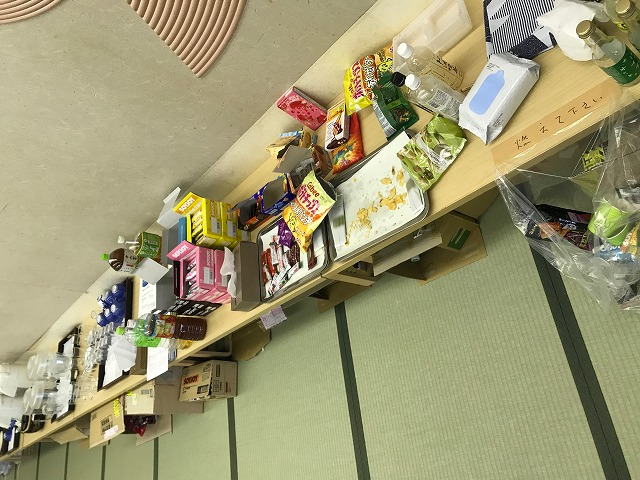
ちなみに（何にどう（ｒｙ、会場の隅にはこういうお茶＆茶菓子＆ゴミ集中センターが設けられていて、参加者のカロリー過剰に大いに貢献していたわけであります！
なお前回同様、DBCLS国内版バイオハッカソンと共通で、各参加者（のグループ）の簡単な作業報告をオンライン上にまとめ、公開しています。
https://tinyurl.com/bh18-7-slides
学生参加者への旅費補助
前回に引き続き、この分野の（少なくとも、この分野に知識や関心のある）若手研究者を増加させることを（最終的な）目標として、学生に対する旅費の補助を行いました。
「会場のホテルに宿泊する（＝相部屋なので、自動的にこの分野の知り合いができる）」こと（及び下に述べる他の条件）を条件として、5名に対して「交通費と宿泊費を支給する」 という方針で、更に幾つかの参加条件をつけました。
結果的に、応募は2名。少ないですが、前回よりは増加しています（2倍になった、とも言う！）。めげずに地道に、この企画は次回も継続していきたい、と考えています。
今後の（研究会の）予定
さて今後の行事予定ですが、3月19日に、今年のワークショップをJST本部（去年に引き続き、サイエンスプラザのある本館ではなく、K's五番町の別館です）で行います。
第3回ハッカソンについても企画中ですが、諸般の事情により、一度決定しかけた内容を白紙に戻す羽目になりました。とはいえ、目下鋭意企画中ですので、早ければ去年と同じ頃には第3回を実施できるようになるかもしれません。
ということで、皆様の積極的なご参加をお待ちしています。日本のどこか？でお会いしましょう！
世話人： 吉沢 明康 （京都大学大学院薬学研究科）
河野 信 （ライフサイエンス統合データベースセンター）
守屋 勇樹 （ライフサイエンス統合データベースセンター）
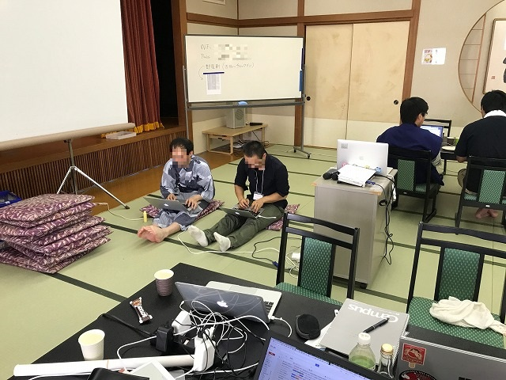
第2回ハッカソン・シンポジウム講演コンテンツ in 統合TV：
上にも記しましたように、第2回ハッカソン・シンポジウムで頂いたチュートリアル講演の動画は統合TVで公開されています。以下がそのリンクです。
なお、「研究発表」の動画はありません。ご了承ください。
- 五斗 進 （DBCLS） DBCLS/NBDCが提供するデータベースとツールの紹介 （15分）［ソフトウェア，データベース，ゲノム解析，入門］
- 片山 俊明 （DBCLS） セマンティック・ウェブによるゲノムデータベース構築 （16分）［RDF，データベース，ゲノム解析，入門］
- 守屋 勇樹 （DBCLS） プロテオーム統合データベース jPOST の紹介 （15分）［データベース，プロテオミクス，入門］
- 津川 裕司 （理研CSRS・IMS） 質量分析データの構造と読み方およびピーク検出方法 （14分）［質量分析，メタボロミクス，入門］
- 早川 英介 （OIST） 質量情報と化合物情報の連携 （16分）［メタボロミクス，ケモインフォマティクス，入門］
- 山本 博之 （HMT） 多変量解析を用いたメタボロームデータ解析 （16分）［メタボロミクス，統計解析，入門］
- 小林 大樹 （熊本大） 質量分析によるプロテオーム解析 （14分）［プロテオミクス，入門］ 講演スライド
- 加藤 雅樹 （基生研） グライコプロテオミクス （14分）［グライコミクス，グライコプロテオミクス，入門］
- 渡辺 由 （新潟大） リポジトリサービスの開発とデータ転送 （12分）［ソフトウェア，データベース，入門］
- 田中 聡 （Trans-IT） 質量分析データ表示ツール Mass++ （13分）［ソフトウェア，質量分析，入門］
Page Last Updated: Feb. 24, 2019